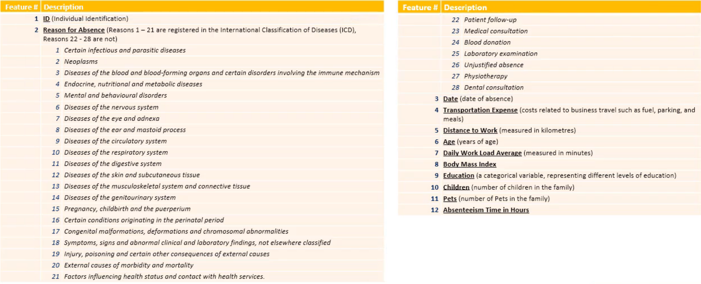
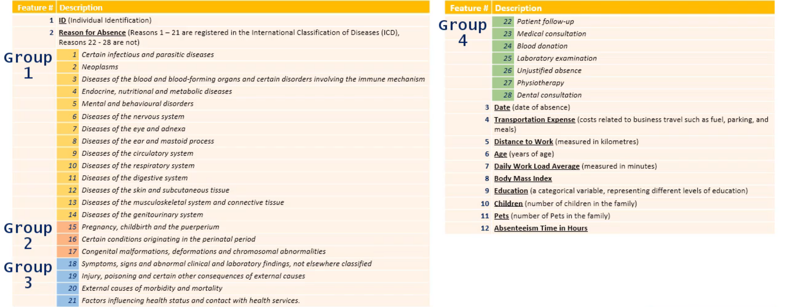

Preprocessing Notebook
Contents
Preprocessing Notebook#
Absenteeism at Work Analysis#
Notebook 1/3
In this project, we will analyze the absenteeism data from the UCI Machine Learning Repository found here.
The database was created with records of absenteeism at work from July 2007 to July 2010 at a courier company in Brazil.
We will define absenteeism as follows:
absence from work during normal working hours resulting in temporary incapacity to execute regular working activity
In this analysis, we will be trying to answer one primary question:
Which factors are most indicative of excessive absenteeism from work and can we predict absenteeism by identifying these factors?
While answering this question, we will also be making use of logistic regression in order to create a model which can predict absenteeism.
By answering this question and creating our model, we will be able to predict the absenteeism rate for any given employee, which will help us maximize the quantity and quality of work done.
This notebook will be dedicated to preprocessing the data to be later used to create a logistic regression model.
Preprocessing the data#
Starting off with importing the pandas library
import pandas as pd
Then reading in the raw CSV data
raw_data = pd.read_csv('Absenteeism-data.csv')
raw_data.info()
<class 'pandas.core.frame.DataFrame'>
RangeIndex: 700 entries, 0 to 699
Data columns (total 12 columns):
# Column Non-Null Count Dtype
--- ------ -------------- -----
0 ID 700 non-null int64
1 Reason for Absence 700 non-null int64
2 Date 700 non-null object
3 Transportation Expense 700 non-null int64
4 Distance to Work 700 non-null int64
5 Age 700 non-null int64
6 Daily Work Load Average 700 non-null float64
7 Body Mass Index 700 non-null int64
8 Education 700 non-null int64
9 Children 700 non-null int64
10 Pets 700 non-null int64
11 Absenteeism Time in Hours 700 non-null int64
dtypes: float64(1), int64(10), object(1)
memory usage: 65.8+ KB
We can see that there are 11 columns and 700 rows.
The columns are described in the image below:

raw_data.head(3)
| ID | Reason for Absence | Date | Transportation Expense | Distance to Work | Age | Daily Work Load Average | Body Mass Index | Education | Children | Pets | Absenteeism Time in Hours | |
|---|---|---|---|---|---|---|---|---|---|---|---|---|
| 0 | 11 | 26 | 07/07/2015 | 289 | 36 | 33 | 239.554 | 30 | 1 | 2 | 1 | 4 |
| 1 | 36 | 0 | 14/07/2015 | 118 | 13 | 50 | 239.554 | 31 | 1 | 1 | 0 | 0 |
| 2 | 3 | 23 | 15/07/2015 | 179 | 51 | 38 | 239.554 | 31 | 1 | 0 | 0 | 2 |
We can make a copy of the raw dataframe so that we can manipulate it and not lose the original data.
df = raw_data.copy()
The ID column is not very useful for our analysis or for trying to predict absenteeism time, so we can drop it.
df.drop(columns=['ID'], inplace=True)
df.head(3)
| Reason for Absence | Date | Transportation Expense | Distance to Work | Age | Daily Work Load Average | Body Mass Index | Education | Children | Pets | Absenteeism Time in Hours | |
|---|---|---|---|---|---|---|---|---|---|---|---|
| 0 | 26 | 07/07/2015 | 289 | 36 | 33 | 239.554 | 30 | 1 | 2 | 1 | 4 |
| 1 | 0 | 14/07/2015 | 118 | 13 | 50 | 239.554 | 31 | 1 | 1 | 0 | 0 |
| 2 | 23 | 15/07/2015 | 179 | 51 | 38 | 239.554 | 31 | 1 | 0 | 0 | 2 |
Manipulating ‘Reason for Absence’:#
As we saw above, there were 28 different reasons identified for absenteeism in this dataset.
Instead of trying to analyze each of these reasons individually, it may make more sense to group them into a few groups so that we can attain a greater understanding of the dataset and remove confusion.
df['Reason for Absence'].unique()
array([26, 0, 23, 7, 22, 19, 1, 11, 14, 21, 10, 13, 28, 18, 25, 24, 6,
27, 17, 8, 12, 5, 9, 15, 4, 3, 2, 16], dtype=int64)
len(df['Reason for Absence'].unique())
28
sorted(df['Reason for Absence'].unique())
[0,
1,
2,
3,
4,
5,
6,
7,
8,
9,
10,
11,
12,
13,
14,
15,
16,
17,
18,
19,
21,
22,
23,
24,
25,
26,
27,
28]
We can see that of the 28 reasons, number 20 was never used.
We can create a dummies dataset for the reasons for absenteeism in order to categorize them.
reason_columns = pd.get_dummies(df['Reason for Absence'])
reason_columns
| 0 | 1 | 2 | 3 | 4 | 5 | 6 | 7 | 8 | 9 | ... | 18 | 19 | 21 | 22 | 23 | 24 | 25 | 26 | 27 | 28 | |
|---|---|---|---|---|---|---|---|---|---|---|---|---|---|---|---|---|---|---|---|---|---|
| 0 | 0 | 0 | 0 | 0 | 0 | 0 | 0 | 0 | 0 | 0 | ... | 0 | 0 | 0 | 0 | 0 | 0 | 0 | 1 | 0 | 0 |
| 1 | 1 | 0 | 0 | 0 | 0 | 0 | 0 | 0 | 0 | 0 | ... | 0 | 0 | 0 | 0 | 0 | 0 | 0 | 0 | 0 | 0 |
| 2 | 0 | 0 | 0 | 0 | 0 | 0 | 0 | 0 | 0 | 0 | ... | 0 | 0 | 0 | 0 | 1 | 0 | 0 | 0 | 0 | 0 |
| 3 | 0 | 0 | 0 | 0 | 0 | 0 | 0 | 1 | 0 | 0 | ... | 0 | 0 | 0 | 0 | 0 | 0 | 0 | 0 | 0 | 0 |
| 4 | 0 | 0 | 0 | 0 | 0 | 0 | 0 | 0 | 0 | 0 | ... | 0 | 0 | 0 | 0 | 1 | 0 | 0 | 0 | 0 | 0 |
| ... | ... | ... | ... | ... | ... | ... | ... | ... | ... | ... | ... | ... | ... | ... | ... | ... | ... | ... | ... | ... | ... |
| 695 | 0 | 0 | 0 | 0 | 0 | 0 | 0 | 0 | 0 | 0 | ... | 0 | 0 | 0 | 0 | 0 | 0 | 0 | 0 | 0 | 0 |
| 696 | 0 | 0 | 0 | 0 | 0 | 0 | 1 | 0 | 0 | 0 | ... | 0 | 0 | 0 | 0 | 0 | 0 | 0 | 0 | 0 | 0 |
| 697 | 0 | 0 | 0 | 0 | 0 | 0 | 0 | 0 | 0 | 0 | ... | 0 | 0 | 0 | 0 | 0 | 0 | 0 | 0 | 0 | 0 |
| 698 | 0 | 0 | 0 | 0 | 0 | 0 | 0 | 0 | 0 | 0 | ... | 0 | 0 | 0 | 0 | 1 | 0 | 0 | 0 | 0 | 0 |
| 699 | 0 | 0 | 0 | 0 | 0 | 0 | 0 | 0 | 0 | 0 | ... | 0 | 0 | 0 | 0 | 0 | 0 | 0 | 0 | 0 | 1 |
700 rows × 28 columns
We can check to make sure that each row only has one reason associated with it.
reason_columns['check'] = reason_columns.sum(axis=1)
reason_columns.check.value_counts()
1 700
Name: check, dtype: int64
This verifies that there is only ever 1 reason for absenteeism, and there is never no reason or multiple reasons.
We have no more use for the ‘check’ column, so we can now drop it, and we can also recreate the dummies dataframe with the first column, or reason 0, dropped.
reason_columns = pd.get_dummies(df['Reason for Absence'], drop_first=True)
reason_columns
| 1 | 2 | 3 | 4 | 5 | 6 | 7 | 8 | 9 | 10 | ... | 18 | 19 | 21 | 22 | 23 | 24 | 25 | 26 | 27 | 28 | |
|---|---|---|---|---|---|---|---|---|---|---|---|---|---|---|---|---|---|---|---|---|---|
| 0 | 0 | 0 | 0 | 0 | 0 | 0 | 0 | 0 | 0 | 0 | ... | 0 | 0 | 0 | 0 | 0 | 0 | 0 | 1 | 0 | 0 |
| 1 | 0 | 0 | 0 | 0 | 0 | 0 | 0 | 0 | 0 | 0 | ... | 0 | 0 | 0 | 0 | 0 | 0 | 0 | 0 | 0 | 0 |
| 2 | 0 | 0 | 0 | 0 | 0 | 0 | 0 | 0 | 0 | 0 | ... | 0 | 0 | 0 | 0 | 1 | 0 | 0 | 0 | 0 | 0 |
| 3 | 0 | 0 | 0 | 0 | 0 | 0 | 1 | 0 | 0 | 0 | ... | 0 | 0 | 0 | 0 | 0 | 0 | 0 | 0 | 0 | 0 |
| 4 | 0 | 0 | 0 | 0 | 0 | 0 | 0 | 0 | 0 | 0 | ... | 0 | 0 | 0 | 0 | 1 | 0 | 0 | 0 | 0 | 0 |
| ... | ... | ... | ... | ... | ... | ... | ... | ... | ... | ... | ... | ... | ... | ... | ... | ... | ... | ... | ... | ... | ... |
| 695 | 0 | 0 | 0 | 0 | 0 | 0 | 0 | 0 | 0 | 1 | ... | 0 | 0 | 0 | 0 | 0 | 0 | 0 | 0 | 0 | 0 |
| 696 | 0 | 0 | 0 | 0 | 0 | 1 | 0 | 0 | 0 | 0 | ... | 0 | 0 | 0 | 0 | 0 | 0 | 0 | 0 | 0 | 0 |
| 697 | 0 | 0 | 0 | 0 | 0 | 0 | 0 | 0 | 0 | 1 | ... | 0 | 0 | 0 | 0 | 0 | 0 | 0 | 0 | 0 | 0 |
| 698 | 0 | 0 | 0 | 0 | 0 | 0 | 0 | 0 | 0 | 0 | ... | 0 | 0 | 0 | 0 | 1 | 0 | 0 | 0 | 0 | 0 |
| 699 | 0 | 0 | 0 | 0 | 0 | 0 | 0 | 0 | 0 | 0 | ... | 0 | 0 | 0 | 0 | 0 | 0 | 0 | 0 | 0 | 1 |
700 rows × 27 columns
df.columns.values
array(['Reason for Absence', 'Date', 'Transportation Expense',
'Distance to Work', 'Age', 'Daily Work Load Average',
'Body Mass Index', 'Education', 'Children', 'Pets',
'Absenteeism Time in Hours'], dtype=object)
reason_columns.columns.values
array([ 1, 2, 3, 4, 5, 6, 7, 8, 9, 10, 11, 12, 13, 14, 15, 16, 17,
18, 19, 21, 22, 23, 24, 25, 26, 27, 28], dtype=int64)
We have already separated out the ‘Reason for Absence’ column from df already, so we can drop the column.
df.drop(columns=['Reason for Absence'], inplace=True)
We can split the absentee reasons into a few key groups in order to analyze them more easily.
Absentee Reason Categories:
1-14: related to various diseases
15-17: related to pregnancy or giving birth
18-21: related to poisonings or symptoms not otherwise classified
22-28: ‘light reasons’ such as a doctor’s appointment

We can split up the reasons dataframe according to the reason category.
reason_columns.loc[:, :14]
| 1 | 2 | 3 | 4 | 5 | 6 | 7 | 8 | 9 | 10 | 11 | 12 | 13 | 14 | |
|---|---|---|---|---|---|---|---|---|---|---|---|---|---|---|
| 0 | 0 | 0 | 0 | 0 | 0 | 0 | 0 | 0 | 0 | 0 | 0 | 0 | 0 | 0 |
| 1 | 0 | 0 | 0 | 0 | 0 | 0 | 0 | 0 | 0 | 0 | 0 | 0 | 0 | 0 |
| 2 | 0 | 0 | 0 | 0 | 0 | 0 | 0 | 0 | 0 | 0 | 0 | 0 | 0 | 0 |
| 3 | 0 | 0 | 0 | 0 | 0 | 0 | 1 | 0 | 0 | 0 | 0 | 0 | 0 | 0 |
| 4 | 0 | 0 | 0 | 0 | 0 | 0 | 0 | 0 | 0 | 0 | 0 | 0 | 0 | 0 |
| ... | ... | ... | ... | ... | ... | ... | ... | ... | ... | ... | ... | ... | ... | ... |
| 695 | 0 | 0 | 0 | 0 | 0 | 0 | 0 | 0 | 0 | 1 | 0 | 0 | 0 | 0 |
| 696 | 0 | 0 | 0 | 0 | 0 | 1 | 0 | 0 | 0 | 0 | 0 | 0 | 0 | 0 |
| 697 | 0 | 0 | 0 | 0 | 0 | 0 | 0 | 0 | 0 | 1 | 0 | 0 | 0 | 0 |
| 698 | 0 | 0 | 0 | 0 | 0 | 0 | 0 | 0 | 0 | 0 | 0 | 0 | 0 | 0 |
| 699 | 0 | 0 | 0 | 0 | 0 | 0 | 0 | 0 | 0 | 0 | 0 | 0 | 0 | 0 |
700 rows × 14 columns
Finding the max by row for each of these categories will return a series with a 1 representing that the absentee was due to a reason in that category, and a 0 representing that the absentee was not due to a reason in that category.
reason_columns.loc[:, :14].max(axis=1)
0 0
1 0
2 0
3 1
4 0
..
695 1
696 1
697 1
698 0
699 0
Length: 700, dtype: uint8
We can expand this to each of the four categories described above.
reason_type_1 = reason_columns.loc[:, :14].max(axis=1)
reason_type_2 = reason_columns.loc[:, 15:17].max(axis=1)
reason_type_3 = reason_columns.loc[:, 18:21].max(axis=1)
reason_type_4 = reason_columns.loc[:, 22:].max(axis=1)
We can now concatenate these series into our df.
df = pd.concat([df, reason_type_1, reason_type_2, reason_type_3, reason_type_4], axis=1)
df.head(3)
| Date | Transportation Expense | Distance to Work | Age | Daily Work Load Average | Body Mass Index | Education | Children | Pets | Absenteeism Time in Hours | 0 | 1 | 2 | 3 | |
|---|---|---|---|---|---|---|---|---|---|---|---|---|---|---|
| 0 | 07/07/2015 | 289 | 36 | 33 | 239.554 | 30 | 1 | 2 | 1 | 4 | 0 | 0 | 0 | 1 |
| 1 | 14/07/2015 | 118 | 13 | 50 | 239.554 | 31 | 1 | 1 | 0 | 0 | 0 | 0 | 0 | 0 |
| 2 | 15/07/2015 | 179 | 51 | 38 | 239.554 | 31 | 1 | 0 | 0 | 2 | 0 | 0 | 0 | 1 |
We have our absentee reasons grouped into four categories in the df, and now we can add meaningful names to the added columns.
column_names = df.columns.values.tolist()[:-4] + ['Reason_' + str(i) for i in range(1, 5)]
column_names
['Date',
'Transportation Expense',
'Distance to Work',
'Age',
'Daily Work Load Average',
'Body Mass Index',
'Education',
'Children',
'Pets',
'Absenteeism Time in Hours',
'Reason_1',
'Reason_2',
'Reason_3',
'Reason_4']
df.columns = column_names
df.head(3)
| Date | Transportation Expense | Distance to Work | Age | Daily Work Load Average | Body Mass Index | Education | Children | Pets | Absenteeism Time in Hours | Reason_1 | Reason_2 | Reason_3 | Reason_4 | |
|---|---|---|---|---|---|---|---|---|---|---|---|---|---|---|
| 0 | 07/07/2015 | 289 | 36 | 33 | 239.554 | 30 | 1 | 2 | 1 | 4 | 0 | 0 | 0 | 1 |
| 1 | 14/07/2015 | 118 | 13 | 50 | 239.554 | 31 | 1 | 1 | 0 | 0 | 0 | 0 | 0 | 0 |
| 2 | 15/07/2015 | 179 | 51 | 38 | 239.554 | 31 | 1 | 0 | 0 | 2 | 0 | 0 | 0 | 1 |
We can also move around the columns to place the reasons at the start of the df, as the reason was originially at the start.
column_names_reordered = ['Reason_' + str(i) for i in range(1, 5)] + df.columns.values.tolist()[:-4]
column_names_reordered
['Reason_1',
'Reason_2',
'Reason_3',
'Reason_4',
'Date',
'Transportation Expense',
'Distance to Work',
'Age',
'Daily Work Load Average',
'Body Mass Index',
'Education',
'Children',
'Pets',
'Absenteeism Time in Hours']
df = df[column_names_reordered]
df.head(3)
| Reason_1 | Reason_2 | Reason_3 | Reason_4 | Date | Transportation Expense | Distance to Work | Age | Daily Work Load Average | Body Mass Index | Education | Children | Pets | Absenteeism Time in Hours | |
|---|---|---|---|---|---|---|---|---|---|---|---|---|---|---|
| 0 | 0 | 0 | 0 | 1 | 07/07/2015 | 289 | 36 | 33 | 239.554 | 30 | 1 | 2 | 1 | 4 |
| 1 | 0 | 0 | 0 | 0 | 14/07/2015 | 118 | 13 | 50 | 239.554 | 31 | 1 | 1 | 0 | 0 |
| 2 | 0 | 0 | 0 | 1 | 15/07/2015 | 179 | 51 | 38 | 239.554 | 31 | 1 | 0 | 0 | 2 |
Checkpoint 1:#
This may be a good spot to create a checkpoint so that we can make changes without having to rerun the entire notebook.
df_reason_mod = df.copy()
Manipulating ‘Date’:#
Since we have time data, we can also analyze whether there are specific months or days of the week that are more likely to result in absenteeism.
type(df_reason_mod.Date[0])
str
We can see that the dates are currently in the form of strings.
Since these are dates, we can convert them into timestamps in order to extract temporal information more easily
df_reason_mod['Date'] = pd.to_datetime(df_reason_mod['Date'], format='%d/%m/%Y')
df_reason_mod.head(3)
| Reason_1 | Reason_2 | Reason_3 | Reason_4 | Date | Transportation Expense | Distance to Work | Age | Daily Work Load Average | Body Mass Index | Education | Children | Pets | Absenteeism Time in Hours | |
|---|---|---|---|---|---|---|---|---|---|---|---|---|---|---|
| 0 | 0 | 0 | 0 | 1 | 2015-07-07 | 289 | 36 | 33 | 239.554 | 30 | 1 | 2 | 1 | 4 |
| 1 | 0 | 0 | 0 | 0 | 2015-07-14 | 118 | 13 | 50 | 239.554 | 31 | 1 | 1 | 0 | 0 |
| 2 | 0 | 0 | 0 | 1 | 2015-07-15 | 179 | 51 | 38 | 239.554 | 31 | 1 | 0 | 0 | 2 |
type(df_reason_mod.Date[0])
pandas._libs.tslibs.timestamps.Timestamp
We can see that this retained the format of the dates, while also updating their type.
df_reason_mod.Date[0]
Timestamp('2015-07-07 00:00:00')
In order to analyze whether there are certain months during which absenteeism rates are higher, we can create a new column specifically for the month of the data points
By accessing the .month property of the timestamp, we can see that the month is now a number between 1 and 12 and place it in a new column.
df_reason_mod.Date[0].month
7
df_reason_mod['Month Value'] = df_reason_mod.Date.apply(lambda x: x.month)
We can also take a look at creating a column with the day of the week to see if absenteeism increases on certain days of the week.
Instead of using words, we can assign values to the days of the week:
Monday = 0
Tuesday = 1
…Sunday = 6
df_reason_mod.Date[0]
Timestamp('2015-07-07 00:00:00')
Similar to what we did for month values above, we can do the same for the day of the week by accessing the .weekday attribute to add a new column to the dataframe.
df_reason_mod.Date[0].weekday()
1
df_reason_mod['Day of the Week'] = df_reason_mod.Date.apply(lambda x: x.weekday())
df_reason_mod.head(3)
| Reason_1 | Reason_2 | Reason_3 | Reason_4 | Date | Transportation Expense | Distance to Work | Age | Daily Work Load Average | Body Mass Index | Education | Children | Pets | Absenteeism Time in Hours | Month Value | Day of the Week | |
|---|---|---|---|---|---|---|---|---|---|---|---|---|---|---|---|---|
| 0 | 0 | 0 | 0 | 1 | 2015-07-07 | 289 | 36 | 33 | 239.554 | 30 | 1 | 2 | 1 | 4 | 7 | 1 |
| 1 | 0 | 0 | 0 | 0 | 2015-07-14 | 118 | 13 | 50 | 239.554 | 31 | 1 | 1 | 0 | 0 | 7 | 1 |
| 2 | 0 | 0 | 0 | 1 | 2015-07-15 | 179 | 51 | 38 | 239.554 | 31 | 1 | 0 | 0 | 2 | 7 | 2 |
We can reorder the columns to move these time columns to where ‘Date’ is while also dropping the now redundant ‘Date’ column.
df_reason_mod.drop(columns='Date', inplace=True)
df_reason_mod.columns.values
array(['Reason_1', 'Reason_2', 'Reason_3', 'Reason_4',
'Transportation Expense', 'Distance to Work', 'Age',
'Daily Work Load Average', 'Body Mass Index', 'Education',
'Children', 'Pets', 'Absenteeism Time in Hours', 'Month Value',
'Day of the Week'], dtype=object)
df_reason_mod = df_reason_mod[['Reason_1', 'Reason_2', 'Reason_3', 'Reason_4', 'Month Value',
'Day of the Week', 'Transportation Expense', 'Distance to Work', 'Age',
'Daily Work Load Average', 'Body Mass Index', 'Education',
'Children', 'Pets', 'Absenteeism Time in Hours']]
df_reason_mod.head(3)
| Reason_1 | Reason_2 | Reason_3 | Reason_4 | Month Value | Day of the Week | Transportation Expense | Distance to Work | Age | Daily Work Load Average | Body Mass Index | Education | Children | Pets | Absenteeism Time in Hours | |
|---|---|---|---|---|---|---|---|---|---|---|---|---|---|---|---|
| 0 | 0 | 0 | 0 | 1 | 7 | 1 | 289 | 36 | 33 | 239.554 | 30 | 1 | 2 | 1 | 4 |
| 1 | 0 | 0 | 0 | 0 | 7 | 1 | 118 | 13 | 50 | 239.554 | 31 | 1 | 1 | 0 | 0 |
| 2 | 0 | 0 | 0 | 1 | 7 | 2 | 179 | 51 | 38 | 239.554 | 31 | 1 | 0 | 0 | 2 |
Checkpoint 2:#
We can now create another checkpoint with completed reason and date columns.
df_reason_date_mod = df_reason_mod.copy()
We can now move on to some of the other columns in the dataframe.
df_reason_date_mod.info()
<class 'pandas.core.frame.DataFrame'>
RangeIndex: 700 entries, 0 to 699
Data columns (total 15 columns):
# Column Non-Null Count Dtype
--- ------ -------------- -----
0 Reason_1 700 non-null uint8
1 Reason_2 700 non-null uint8
2 Reason_3 700 non-null uint8
3 Reason_4 700 non-null uint8
4 Month Value 700 non-null int64
5 Day of the Week 700 non-null int64
6 Transportation Expense 700 non-null int64
7 Distance to Work 700 non-null int64
8 Age 700 non-null int64
9 Daily Work Load Average 700 non-null float64
10 Body Mass Index 700 non-null int64
11 Education 700 non-null int64
12 Children 700 non-null int64
13 Pets 700 non-null int64
14 Absenteeism Time in Hours 700 non-null int64
dtypes: float64(1), int64(10), uint8(4)
memory usage: 63.0 KB
Transportation Expense: monthly transportation expenses of an individual measured in dollars ($USD)
Distance to Work: the kilometers an individual has to travel from home to work
Age: age of an individual rounded down
Daily Work Load Average: the number of hours an individual works per day on average
Body Mass Index: the weight an individual is in kilograms divided by the square of their height in meters, designates if the person is overweight, underweight, obese, etc.
Education: nominal data of the level of education an individual has completed
1: high school education
2: graduate level education
3: post graduate education
4: a master or a doctor
Children: the number of children an individual has
Pets: the number of pets an individual has
Absenteeism Time in Hours: the number of hours an individual has been absent from work
df_reason_date_mod.Education.value_counts()
1 583
3 73
2 40
4 4
Name: Education, dtype: int64
We can see that the majority of individuals only have a highschool education, while the rest have more education. Because there are few data points with a higher level of education, the disparity between those points has less meaning. As a result, we can combine education higher than highschool into a single category.
df_reason_date_mod.Education = df_reason_date_mod.Education.map({1:0, 2:1, 3:1, 4:1})
df_reason_date_mod.Education.value_counts()
0 583
1 117
Name: Education, dtype: int64
We can now save this preprocssed dataframe to a csv file and move on to analyzing it.
df_reason_date_mod.to_csv('absenteeism_preprocessed.csv', index=False)